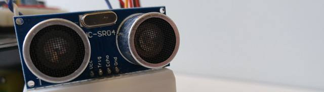
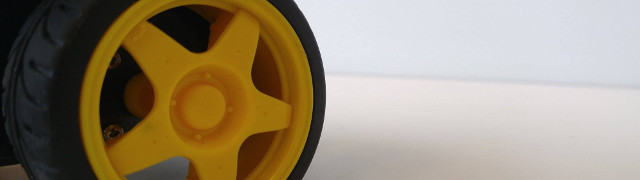
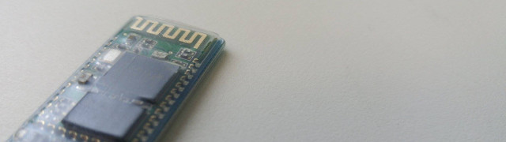

Autonomous Movements
The hardware for autonomous mode includes the ultrasonic range finder and a servo motor.
The range finder is attached to a small breadboard which is glued onto the
servo's rotating arm.
The robot moves forward until it detects an object with the range finder and gradually
slows down in order to adjust itself in time to avoid a collision.
Once it is stationary, the servo would rotate the ultrasonic range finder so it canvas
take in a 180 degree field-of-view scan and decide whether to turn left or right based
on which side returned a longer distance.

Line Follower
The primary sensor used for Line Following is the reflective optical sensor; this sensor
allows the arduino to distinct between light and dark images through infra-red scanning;
for this we require the line to follow be a different color from the color of
the floor.
The robot is set to move at a predefined speed; this speed was determined through several trials
where the robot slowly accelerate and we monitor the speed until it goes off the line due to being
too fast for the motors to react in time.

Bluetooth Communication
For our team's additional functionality we chose to implement remote user interface/
control functionality via Bluetooth.
Smartphones are ubiquitous these days which makes them an ideal bluetooth controller.
We also added Voice Recognition capabilities via Google's Speech API to increase accessibility
and the coolness factor.
Using a HC-06 bluetooth module, we connected the robot to an Android mobile
app that has a GUI for changing between the various modes: Line Following, autonomous, and manual control model.
We used the Google Speech API to set predefined voice commands which would trigger certain actions of the robot,
however we later dropped the feature because due to criteria demands.
Alternatively, we leveraged the phone’s internal gyroscope sensor to add tilt motion for moving, and a shake motion
to make the robot wiggle in place. To continue with the Rapid Prototyping spirit of the Arduino platform,
MIT App Inventor (http://appinventor.mit.edu) was used to develop the Android app that served
as the remote user interface to control the robot. This tool allowed for incredibly fast
development without wasting time with the details of Android app Development.
Though the interface/creation process may seem simplistic, one can create complex and
powerful apps with minimal limitations.
The Bluetooth module allowed for two-way serial communication over Pins 0 and 1.
Command were sent over Serial input from phone to Arduino,
and status data was sent from Arduino to phone.

{kind=link}
{kind=link}